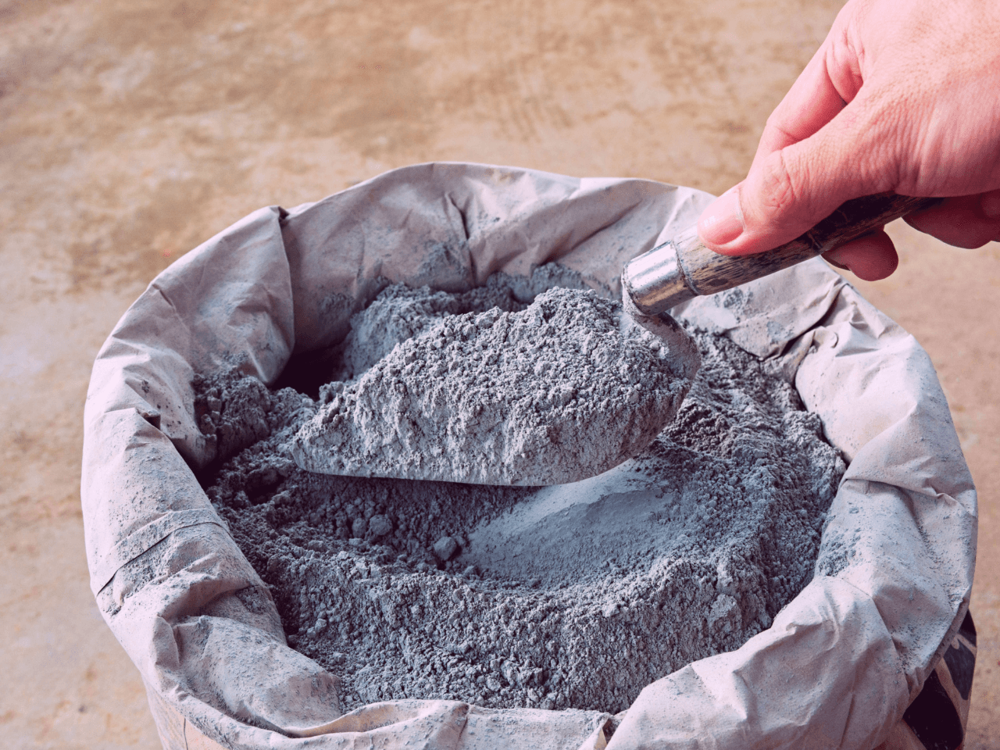

Publicado em:
Quantos Metros Quadrados de Piso Cobre um Saco de Cimento
Ao planejar a instalação de um piso, uma das dúvidas mais frequentes é: quantos metros quadrados consigo cobrir com um saco de cimento? Este cálculo é essencial para evitar desperdício e garantir um acabamento de qualidade.
1. Fatores que Influenciam o Rendimento do Cimento
O rendimento varia de acordo com diversos fatores, incluindo:
- Espessura da camada de argamassa: Quanto mais espessa, maior o consumo.
- Tipo de piso: Porcelanato, cerâmica ou pedras naturais exigem quantidades diferentes.
- Tipo de cimento: Cimento CP II ou CP V são mais comuns para pisos, enquanto cimentos especiais podem ser necessários para áreas externas ou úmidas.
- Proporção da mistura: A mistura padrão é 1 parte de cimento para 3 partes de areia, mas pode variar conforme a aplicação.
2. Média de Consumo de Cimento
Para pisos comuns, a espessura da argamassa costuma variar entre 0,8 cm a 1,5 cm. A estimativa de cobertura é:
- 1 saco de 50 kg de cimento + areia (1:3): cobre de 5 a 6 m² com 1 cm de espessura.
- Se a camada for mais grossa, o rendimento diminui proporcionalmente.
⚠️ Lembre-se: pisos irregulares, grandes peças ou revestimentos especiais podem exigir mais argamassa.
3. Como Calcular a Quantidade Exata de Cimento
Para obter maior precisão, utilize a fórmula:
Quantidade de cimento (sacos) = (Área do piso (m²) × Espessura da argamassa (cm)) ÷ Rendimento por saco (m²)
Exemplo prático: Piso de 20 m² com 1 cm de argamassa, considerando 1 saco cobre 5 m²:
Sacos necessários = (20 × 1) ÷ 5 = 4 sacos
üëâ Use a nossa calculadora para automatizar os cálculos: calculadora de obra online
4. Tipos de Assentamento
O tipo de assentamento influencia diretamente o consumo de cimento:
- Assentamento direto: Ideal para pisos nivelados, usa menos argamassa.
- Assentamento com regularização: Piso desnivelado requer mais argamassa, aumentando o consumo de cimento.
- Contrapiso autonivelante: Evita diferenças de altura, mas consome mais material na camada de regularização.
5. Cuidados e Dicas Práticas
- Compre um pouco a mais: Adquirir 10% extra evita imprevistos.
- Prepare corretamente a superfície: Contrapiso limpo e nivelado reduz desperdício.
- Misture corretamente: Seguir a proporção de cimento, areia e água garante resistência.
- Use ferramentas adequadas: Espátulas, desempenadeiras e níveis garantem uniformidade.
6. Economia e Durabilidade
Planejar o consumo de cimento não só economiza dinheiro, mas também garante um piso mais durável. Camadas muito finas podem causar descolamento das peças, enquanto camadas muito grossas geram desperdício.
7. Conclusão
Em média, um saco de 50 kg de cimento cobre de 5 a 6 m² com 1 cm de argamassa. No entanto, fatores como tipo de piso, espessura, método de assentamento e preparo da superfície podem alterar essa estimativa. Planejamento e cálculo correto garantem um acabamento econômico e de qualidade.
üëâ Veja tamb√©m: O que √© seguro de obra,o que cobre e como contratar